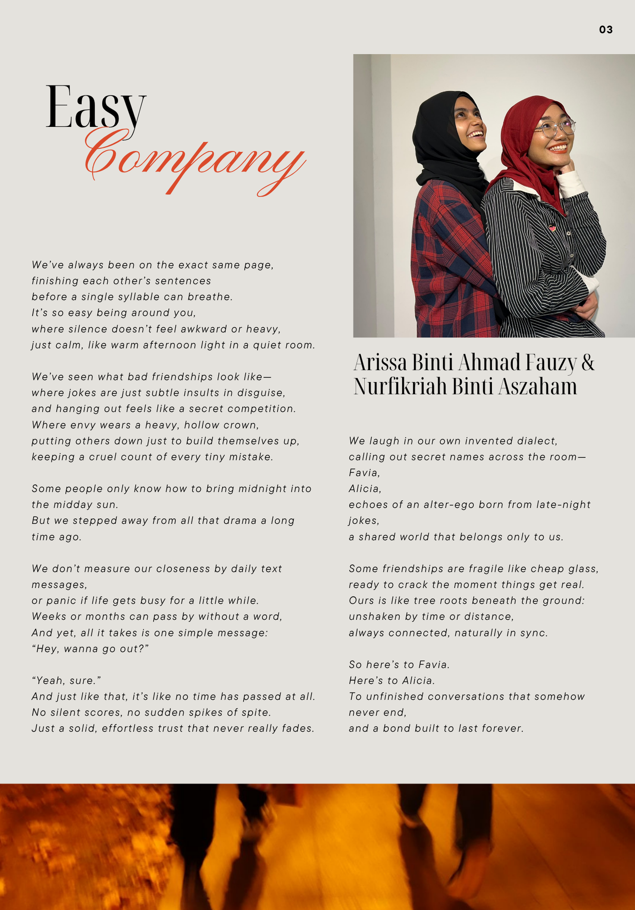
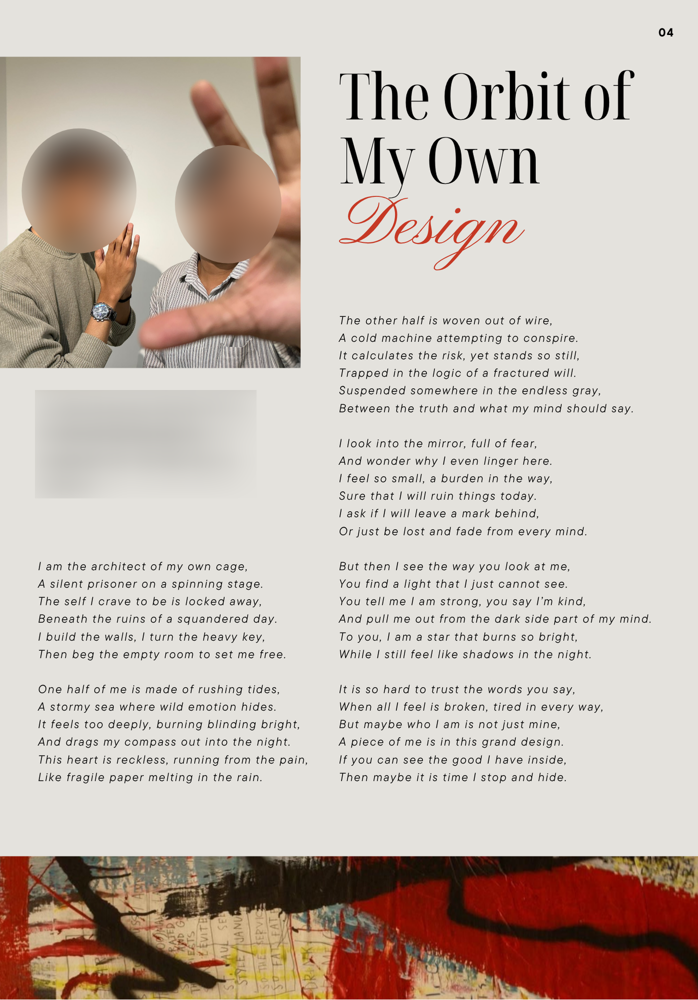
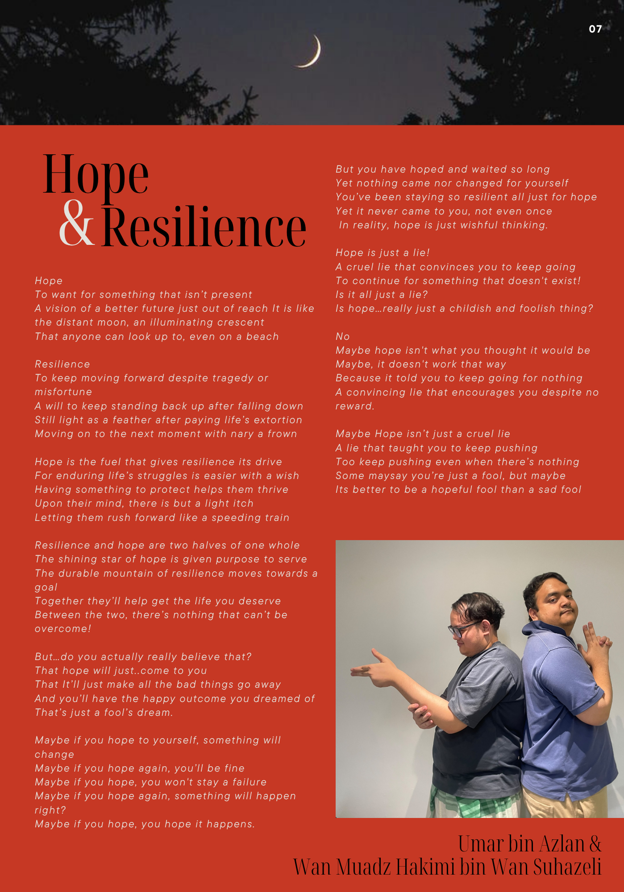

Gallery: Graphic Design


Class zine for my creative writing course, compiling the whole class's poems and personal essays. I co-made it with a friend: I handled most of the layout and typography, and she handled the design and decoration. It taught me how magazine-style layouts work and how to keep many pages on theme without making them look the same. Made in Canva.





Group project for my 20th-century literature class: a booklet compiling four works (2 poems, a short story, and a novella) around one theme. I designed the Hemingway section with a minimalist look to match his simple but absurd way of writing. Made in Canva.


Mock social media posts about fake news for my media literacy class. I wanted a style that was subtle but still stood out at first glance, so I used color to highlight the key points. Made in Canva.